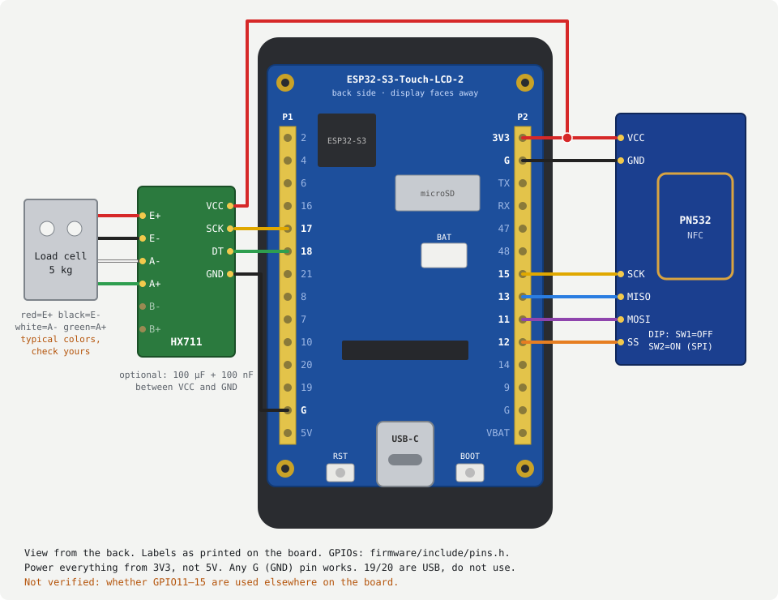

Bauen & FlashenBuild & flash
Von den Teilen bis zur ersten Wägung.From parts to the first weighing.
- TeileParts
- VerdrahtungWiring
- MechanikMechanics
- Im Browser flashenFlash from browser
- Selbst bauenBuild yourself
- InbetriebnahmeCommissioning
- Tipps & ProblemeTips & problems
TeileParts
| Board | Waveshare ESP32-S3-Touch-LCD-2 (ESP32-S3R8, 16 MB Flash, 8 MB Octal-PSRAM, ST7789T3 240×320, Touch CST816) |
|---|---|
| WägezelleLoad cell | Biegebalken 5 kg, 4 Leiter (E+, E−, A+, A−)5 kg bar load cell, 4 wires (E+, E−, A+, A−) |
| ADC | HX711-Modul, mit 3,3 V versorgen, DOUT darf keine 5 V führen. Alternativ NAU7802 oder ADS1232, siehe Anderer Wägesensor.powered with 3.3 V, DOUT must not carry 5 V. Alternatively NAU7802 or ADS1232, see Other load sensor. |
| NFC | PN532 im SPI-Modus (DIP: SW1 = OFF, SW2 = ON), 3,3 Vin SPI mode (DIP: SW1 = OFF, SW2 = ON), 3.3 V |
| Tags | NTAG215 / NTAG216 |
| GehäuseEnclosure | 3D-gedruckt, Stahl als Ballast im Sockel3D printed, steel as ballast in the base |
| OptionalOptional | Kondensatoren 100 µF und 100 nF am HX711 gegen gestörte Messwerte100 µF and 100 nF capacitors at the HX711 against noisy readings |
Es gibt keine SD-Karte. Konfiguration liegt im NVS, Theme und Warteschlange im LittleFS.There is no SD card. Configuration lives in NVS, theme and queue in LittleFS.
VerdrahtungWiring
Alle Pins stehen zentral in firmware/include/pins.h. Display und Touch sind auf dem Waveshare-Board fest verdrahtet. Extern kommen nur HX711 und PN532 an die Header.All pins are defined in firmware/include/pins.h. Display and touch are wired on the Waveshare board. Only the HX711 and PN532 connect to the headers.

Die Tabelle nennt die Beschriftung, die auf der Rückseite des Boards neben jedem Pin aufgedruckt ist (Zahl = GPIO, „G“ = GND). P1 ist die linke, P2 die rechte Stiftleiste, von hinten gesehen.The table lists the label printed next to each pin on the back of the board (number = GPIO, “G” = GND). P1 is the left, P2 the right pin header, seen from the back.
| HX711 | SCK → 17 (P1)DT/DOUT → 18 (P1)VCC → 3V3 (P2)GND → G |
|---|---|
| PN532 (SPI) | SCK → 15 (P2)MISO → 13 (P2)MOSI → 11 (P2)SS → 12 (P2)VCC → 3V3 (P2), GND → G (P2) |
| Touch (I²C) | SDA = GPIO48, SCL = GPIO47, Adresseaddress 0x15 |
| Display | SCLK 39, MOSI 38, MISO 40, DC 42, CS 45, BL 1 |
Warum SPI statt I²C beim PN532? Im I²C-Modus blieb SCL am Waagen-Board dauerhaft auf low, an allen getesteten Pins. Dasselbe Modul lief an einem NodeMCU-ESP32 fehlerfrei, die Ursache ist nicht geklärt. Per Software-SPI an eigenen Pins läuft es. Ob GPIO11 bis 15 sonst belegt sind (vermutlich SD-Slot, ungenutzt), ist am Schaltplan nicht geprüft.Why SPI instead of I²C for the PN532? In I²C mode SCL stayed low on the scale board on every pin tested. The same module worked flawlessly on a NodeMCU-ESP32; the cause is unknown. Software SPI on dedicated pins works. Whether GPIO11 to 15 are otherwise used (probably the unused SD slot) has not been checked against the schematic.
Anderer WägesensorOther load sensor
Sensortyp und Pins stellst du auf der Webseite unter Kalibrierung → Wägesensor ein (nur Admin). Das Gerät startet danach neu. Pins von Display, Touch, NFC und USB lassen sich nicht wählen. Die Kalibrierung wird pro Sensortyp gespeichert, nach dem ersten Wechsel einmal neu kalibrieren.Choose sensor type and pins in the web UI under Calibration → Load sensor (admin only). The device restarts afterwards. Pins used by display, touch, NFC and USB cannot be selected. Calibration is stored per sensor type; calibrate once after switching for the first time.
| HX711 / HX710B | Standard, siehe oben.Default, see above. |
|---|---|
| NAU7802 (I²C) | z. B. SparkFun Qwiic Scale, 3,3 V, Adresse 0x2A. Ohne weitere Pins am Touch-Bus: SCL → 47, SDA → 48 (P2). Andere freie Pins bekommen einen eigenen Bus. Am Gerät nicht geprüft.e.g. SparkFun Qwiic Scale, 3.3 V, address 0x2A. Without extra pins on the touch bus: SCL → 47, SDA → 48 (P2). Other free pins get a bus of their own. Not tested on the device. |
| ADS1232 / ADS1231 | Wie HX711: SCLK → 17, DOUT → 18, PDWN optional an einen freien Pin oder fest auf 3,3 V. Datenrate 10 SPS und Verstärkung per Lötbrücke am Modul. Am Gerät nicht geprüft.Like the HX711: SCLK → 17, DOUT → 18, PDWN optionally to a free pin or tied to 3.3 V. Data rate 10 SPS and gain via solder jumpers on the module. Not tested on the device. |
| Freie PinsFree pins | 2, 4, 6, 7, 8, 10, 16, 17, 18, 21 (P1), 9, 14 (P2) |
MechanikMechanics


- Biegebalken: Sockel an einem Ende, Wiegeplatte am anderen. Distanzstücke sorgen dafür, dass nur die Enden Kontakt haben. Der Pfeil auf der Zelle zeigt die Lastrichtung.Bar load cell: base at one end, weighing platform at the other. Spacers make sure only the ends touch. The arrow on the cell shows the load direction.
- Ballast (Stahl) nur im Sockel und am Rand. Die Wiegeplatte enthält keinen Ballast, ihr Eigengewicht wird tariert.Ballast (steel) only in the base and at the edge. The platform holds none, its own weight is tared.
- Ein PN532 sitzt mittig unter der Wiegeplatte, die aus Kunststoff und möglichst höchstens 10 mm dick ist. Um die Antenne herum sind mindestens 3 cm frei von Metall. Realistische Leseweite: 2 bis 4 cm.One PN532 sits centred under the plastic platform, ideally at most 10 mm thick. Keep at least 3 cm around the antenna free of metal. Realistic reading range: 2 to 4 cm.
- Box-Tags kleben mittig auf dem Boxboden und werden gelesen, wenn die Box auf der Platte steht. Der Spulen-Tag wird an der markierten Scan-Zone gelesen.Box tags are stuck to the centre of the box bottom and read while the box stands on the platform. The spool tag is read at the marked scan zone.
- Mehrere Tags können gleichzeitig in Reichweite sein. Die Software ordnet sie nach Typ und aktuellem Zustand zu und ignoriert unerwartete.Several tags can be in range at once. The software assigns them by type and current state and ignores unexpected ones.
Im Browser flashenFlash from your browser
Der schnellste Weg: kein PlatformIO, keine Installation. Du brauchst Chrome, Edge oder Opera am Computer (nicht Firefox, Safari oder Smartphone) und ein USB-C-Kabel zur Waage.The fastest way: no PlatformIO, no install. You need Chrome, Edge or Opera on a computer (not Firefox, Safari or a phone) and a USB-C cable to the scale.
Vorabversion: Release-Kandidaten und Tests sind weniger erprobt und können Fehler enthalten. Für den Alltag die stabile Version nehmen.Pre-release: release candidates and test builds are less proven and may contain bugs. Use the stable version for everyday use.
Standard ist die neueste stabile Version; Release-Kandidaten und Tests wählst du über den Kanal (wie beim Online-Update). Alle Versionen mit Änderungen und Dateien stehen unter Releases auf GitHub. Das 3D-Modell (Gehäuse V1.0 mit Komponenten) lässt sich in Fusion, FreeCAD und anderen CAD-Programmen öffnen.The default is the latest stable version; pick release candidates and test builds via the channel (as with the online update). All versions with changes and files are listed under Releases on GitHub. The 3D model (enclosure V1.0 with components) opens in Fusion, FreeCAD and other CAD tools.
- Verbinde die Waage per USB-C mit dem Computer.Connect the scale to your computer via USB-C.
- Klicke auf „Firmware installieren“ und wähle den seriellen Anschluss der Waage aus.Click “Install firmware” and pick the scale’s serial port.
- Beim ersten Mal „Gerät löschen“ anhaken. Das entfernt alte Einstellungen und sorgt für einen sauberen Start.On the first install tick “Erase device”. This removes old settings and gives a clean start.
- Warte, bis der Vorgang fertig ist (ca. 1 bis 2 Minuten). Die Waage startet neu.Wait until it finishes (about 1 to 2 minutes). The scale restarts.
- Schließe das Installationsfenster und richte die Waage mit der Maske darunter ein.Close the install dialog and set up the scale with the form below.
Waage einrichten (WLAN und Admin-Passwort)Set up the scale (Wi-Fi and admin password)
Direkt nach dem Flashen, über dasselbe USB-Kabel. Schließe zuerst das Installationsfenster. Ein Hotspot ist dafür nicht nötig.Right after flashing, over the same USB cable. Close the install dialog first. No hotspot needed.
Dieser Browser unterstützt kein Web Serial. Bitte Chrome, Edge oder Opera am Computer nutzen oder den Hotspot verwenden.This browser does not support Web Serial. Please use Chrome, Edge or Opera on a computer, or use the hotspot.
Die Waage verbindet sich sofort mit dem WLAN und speichert die Daten erst, wenn das klappt. Die Passwörter gehen nur per USB an die Waage, werden nirgends gespeichert und nicht protokolliert. Fragt der Browser erneut nach dem Anschluss, wähle wieder die Waage. Antwortet sie nicht, Stecker kurz ziehen und erneut versuchen.The scale connects to the Wi-Fi right away and only saves the data once that works. The passwords only go to the scale over USB, are not stored anywhere and not logged. If the browser asks for the port again, pick the scale again. If it does not answer, unplug it briefly and retry.
Ohne USB-Einrichtung (Rückfall): Hat die Waage kein WLAN gespeichert, steht auf dem Display „WLAN einrichten: Filamentwaage-Setup“ mit einem Passwort. Das Passwort erzeugt die Waage beim ersten Start zufällig, jede Waage hat ein eigenes. Verbinde dich damit, wie in der Anleitung beschrieben, und ändere danach das Admin-Passwort.Without USB setup (fallback): if the scale has no Wi-Fi saved, the display shows “Set up WiFi: Filamentwaage-Setup” together with a password. The scale generates it randomly at first boot, every scale has its own. Join with it as described in the user guide and change the admin password afterwards.
- Verbindet sich der Browser nicht, halte die BOOT-Taste gedrückt, während du das USB-Kabel einsteckst, und versuche es noch einmal.If the browser cannot connect, hold the BOOT button while plugging in the USB cable and try again.
- Das Web-Image ist ein Standard-Build: kein voreingestelltes WLAN, die Spoolman-Adresse steht auf
http://spoolman.local:7912und lässt sich in der Weboberfläche ändern, das Theme hat die Standardwerte.The web image is a stock build: no preset Wi-Fi, the Spoolman address defaults tohttp://spoolman.local:7912and can be changed in the web UI, the theme uses its defaults. - Die Datei wird bei jeder stabilen Release automatisch aus dem Quellcode gebaut. Wer es selbst bauen will, nutzt den Weg darunter.The file is built automatically from the source for every stable release. If you prefer to build it yourself, use the route below.
Nur einmal flashen: Neue Versionen installierst du danach direkt in der Weboberfläche der Waage unter System → Firmware-Update („Nach Updates suchen“, „Jetzt aktualisieren“). Kabel und Web-Flasher brauchst du dafür nicht mehr. Gilt ab der ersten Firmware mit dieser Funktion.Flash only once: after that you install new versions right in the scale’s web UI under System → Firmware update (“Check for updates”, “Update now”). No cable or web flasher needed any more. Applies from the first firmware with this feature.
Selbst bauen und flashenBuild and flash yourself
Du brauchst PlatformIO (VS Code oder CLI).You need PlatformIO (VS Code or CLI).
git clone https://github.com/Drache055/filament-scale.git
cd filament-scale/firmware
cp include/secrets.h.example include/secrets.h
# secrets.h bearbeiten / edit: Spoolman-URL (optional: eigenes OTA-Passwort)
pio run -e waage -t upload # Firmware per USB
pio run -e waage -t uploadfs # LittleFS (theme.json)Danach reicht das Netzwerk:After that the network is enough:
OTA_PASSWORD=<ota-password> pio run -e waage-ota -t upload # Firmware
OTA_PASSWORD=<ota-password> pio run -e waage-ota -t uploadfs # ThemeDas OTA-Passwort steht auf der Webseite der Waage unter WLAN → Geräte-Passwörter (nur Admin), nicht auf dem Display. Hast du in secrets.h ein eigenes OTA_PASSWORD (mindestens 8 Zeichen) gesetzt, gilt dieses.The OTA password is listed on the scale's web page under WiFi → Device passwords (admin only), not on the display. If you set your own OTA_PASSWORD (at least 8 characters) in secrets.h, that one applies.
Achtung: uploadfs überschreibt das ganze LittleFS und löscht damit die Offline-Warteschlange. Vorher prüfen, ob Updates ausstehen.Careful: uploadfs overwrites the whole LittleFS including the offline queue. Check for pending updates first.
WLAN: Die Werte aus secrets.h werden einmalig beim ersten Start übernommen. Ohne WLAN startet der Hotspot Filamentwaage-Setup (immer geschützt, das Passwort steht auf dem Display).Wi-Fi: the values in secrets.h are adopted once at first boot. Without Wi-Fi the Filamentwaage-Setup hotspot starts (always protected, the password is shown on the display).
secrets.h steht in der .gitignore und wird nie eingecheckt.secrets.h is in .gitignore and is never committed.
InbetriebnahmeCommissioning
- Board-Test: Beim Start erscheinen Flash- und PSRAM-Größe im seriellen Monitor (115200 Baud).Board test: at boot flash and PSRAM size show in the serial monitor (115200 baud).
- Display und Touch: Zeigt Home an, reagiert das Tippen? Sonst Menü → Einstellungen → Touch-Kalibrierung.Display and touch: does Home show, does tapping respond? Otherwise Menu → Settings → Touch calibration.
- Waage: Rohwert ansehen, Lastrichtung der Zelle prüfen, dann kalibrieren (Menü → Einstellungen → Kalibrierung, Referenzgewicht 100 g oder mehr).Scale: check the raw value and the load direction of the cell, then calibrate (Menu → Settings → Calibration, reference weight 100 g or more).
- NFC: Menü → NFC zeigt den aufliegenden Tag. Einen Box-Tag und einen Filament-Tag schreiben.NFC: Menu → NFC shows the tag on the scale. Write a box tag and a filament tag.
- Spoolman: URL eintragen, Status auf der Webseite prüfen, Spule zuordnen.Spoolman: enter the URL, check the status in the web UI, assign a spool.
- Erster Durchlauf mit einer Testspule, bevor du echte Bestände aktualisierst.First run with a test spool before you update real inventory.
- Zugang ändern: Geräte-PIN (und, falls nicht per USB eingerichtet, das Admin-Passwort) auf der Webseite unter Benutzer → Admin setzen.Change credentials: set the device PIN (and, if not set up via USB, the admin password) in the web UI under Users → Admin.
Tipps & ProblemeTips & problems
| Feste Anzeige wie −67 gFixed reading like −67 g | Der Wägesensor liefert keine Daten (nicht angeschlossen, falscher Sensortyp oder falsche Pins). Im Log erscheint „ungültige Lesungen verworfen“. Tritt das mit angeschlossenem HX711 auf, ist die Versorgung gestört: Kondensatoren ergänzen, Verdrahtung prüfen.The load sensor delivers no data (not connected, wrong sensor type or wrong pins). The log shows “invalid readings discarded”. If it happens while connected, power is unstable: add capacitors, check wiring. |
|---|---|
| Gewicht negativ beim AuflegenWeight goes negative when loading | Zelle falsch herum eingebaut. Pfeil muss in Lastrichtung zeigen.Cell mounted the wrong way. The arrow must point in load direction. |
| Tag wird nicht gelesenTag is not read | Abstand zur Antenne unter 4 cm halten, Metall in der Nähe vermeiden. Meldet das Log „Firmware-Abfrage fehlgeschlagen“, antwortet das Modul nicht: DIP-Schalter (SPI) und Verdrahtung prüfen. Die Waage versucht es alle 15 s erneut.Keep the distance to the antenna under 4 cm and avoid nearby metal. If the log says “Firmware-Abfrage fehlgeschlagen” the module does not answer: check DIP switches (SPI) and wiring. The scale retries every 15 s. |
| Meldung „Invalid IO 255““Invalid IO 255” message | Kommt von der Adafruit-Bibliothek (kein IRQ-/Reset-Pin) und ist harmlos.Comes from the Adafruit library (no IRQ/reset pin) and is harmless. |
| Passwort vergessenForgot password | Seriell admin reset setzt Passwort „Filament“, PIN „1234“, die Sperre und den Admin-Tag zurück.Serial admin reset restores password “Filament”, PIN “1234”, the lock and the admin tag. |
| Geisterbilder auf dem DisplayGhosting on the display | Der VCOMS-Wert (Standard 0x24) lässt sich unter Einstellungen → Display ändern. Nur mit Sichtprüfung am Gerät, LCM-Control muss 0x0C bleiben (sonst sind Rot und Blau vertauscht).The VCOMS value (default 0x24) can be changed under Settings → Display. Only with a visual check on the device; LCM control must stay 0x0C (otherwise red and blue are swapped). |
| OTA-Build | Bricht der OTA-Build wegen eines beschädigten Build-Ordners ab: rm -rf .pio/build/waage-ota.If the OTA build fails due to a corrupted build folder: rm -rf .pio/build/waage-ota. |
TestsTests
cd firmware
pio test -e nativeDie Logik (NDEF, Tags, Warteschlange, Wiegeablauf) ist am Rechner getestet. Der komplette Ablauf mit echter Waage, Box-Tag und Spoolman wurde noch nicht abschließend am Gerät geprüft. Rückmeldungen sind willkommen.The logic (NDEF, tags, queue, weighing flow) is tested on the host. The complete flow with a real scale, box tag and Spoolman has not been fully verified on hardware yet. Feedback is welcome.